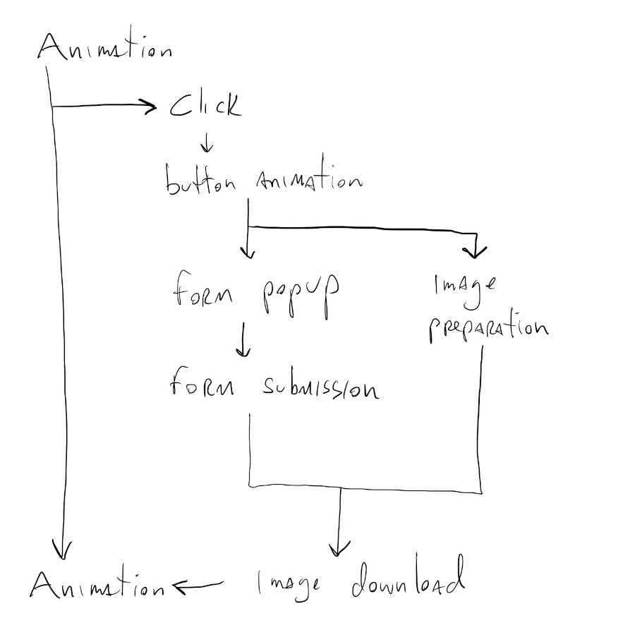
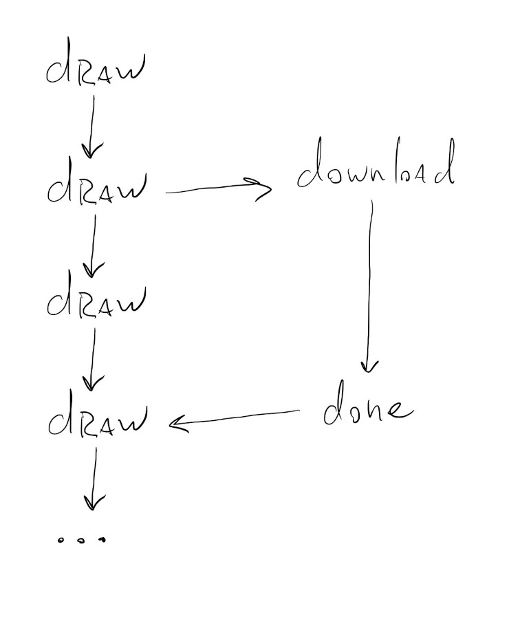

Designing Generative Experiences
2511 Term
Concurrency
Before we really talk about AI models and how to use them, we have to talk about concurrency.
Generally speaking, programs are sequential processes: the code we write is executed one line at a time following the order in which it’s written.
Traditionally, this mental model also worked well with how processors executed the code: one instruction/command at a time.
Nowadays, both of these assumptions/models are not entirely true all the time: processors can do multiple things at the same time, and we might need code to run out of order.
Interactivity
One place where the sequential model for code execution really breaks down is in places where we have heavy user interactions, like in a browser. Let’s say we have a page with an animation and a button for downloading a snapshot of the animation. When the user clicks the button, the button spins and changes color, and also triggers a pop up asking for the user’s email.
If we were running these tasks sequentially, a possible order for them might look like this:

Each of these steps has to finish before the next one can begin and during the whole time these are being executed the animation is paused on the screen and the user can’t click on anything else. If it’s an interactive animation, and it takes a while for the image to get ready and be downloaded, the user has to wait and in some cases they might not even have control of their mouse.
If, however, we have some way of telling the computer that some of these tasks can be run independent of each other and in parallel, the execution graph for the above actions might look like this:

Some of the code that executes the button animation, displays the download form, and prepares the image can all be run at the same time, concurrently. And, more importantly, the animation can keep running in the background. It doesn’t have to stop and wait for the other actions to finish executing.
Once the image is ready and the user has filled out the form, it will be downloaded in parallel with whatever other action the user might be performing. The animation stays interactive the whole time and at no moment did the user lose control of their mouse.
Concurrency in JavaScript
One small, but extremely important detail that was overlooked in the description above was implied in the phrase “once the image is ready and the user has filled out the form”. We actually need a mechanism that either detects when certain actions are done executing, or that will trigger new parallel actions once a certain action is done executing.
We’ve seen something like this in some of the p5.js functions that load data from files, like: loadImage(), loadStrings() and loadJSON(). If we look at their documentation we’ll see that they all have this similar signature:
loadImage(path, [successCallback], [failureCallback])
where successCallback and failureCallback are optional arguments that specify functions to be executed once the file in the path argument has been downloaded, or has failed to load.
Downloading a file is something that can take a really long time, depending on the file size and location, and since we don’t want to pause our program while that happens, we tell the computer to start downloading the file and specify what it should do when it’s done.

These functions to be called in the future are called callback functions and this is a really common pattern for interactive code in JavaScript.
Consider the following code:
The function takesLongTimeSync() does something that takes a long time to finish, and since it’s a synchronous function, our code doesn’t do anything else while it waits for it to finish. We call it once at frame \(61\) and print DONE! once it’s finished running.
We can clearly see when the takesLongTimeSync() function executes because our animation just stops.
Now, consider running an asynchronous version of the function that takes a callback as an argument takesLongTime(callback).
The code is mostly the same, but we have to create the function that will be called when takesLongTime() finishes. In this case it can be as simple as a function that just prints DONE! like before:
function printDone() {
pEl.html("DONE!");
}
The big difference now is that while takesLongTime() is executing, our code will keep running and our draw() loop can keep drawing.
async / await
The callback pattern for concurrent programming is good for simple cases, but can lead to something like this if we have to chain multiple asynchronous function calls together:
function evenMoreCallback() {
print("DONE!");
}
function anotherCallback() {
evenMoreAsyncFunction(evenMoreCallback);
}
function secondCallback() {
anotherAsyncFunction(anotherCallback);
}
function firstCallback() {
secondAsyncFunction(secondCallback);
}
takesLongTime(firstCallback);
This is confusing to read and write. The version where we use anonymous functions is even worse:
takesLongTime(function() {
secondAsyncFunction(function() {
anotherAsyncFunction(function() {
print("DONE!");
})
})
});
Since chaining asynchronous functions like this is such a common pattern in interactive/browser code, JavaScript gives us another wait of doing this, using async functions.
An async function tells the JavaScript execution engine that it should go execute the function and then come back to the main code once the execution is done.
Using it in our example above looks like this:
It’s a way to pretend like the asynchronous functions are synchronous and write code that looks like synchronous code, but in reality runs asynchronously.
It doesn’t look much different for this very simple case, but if we had to chain together multiple calls to asynchronous functions it might look like this instead:
await takesLongTime();
await secondAsyncFunction();
await anotherAsyncFunction();
await evenMoreAsyncFunction();
print("DONE!");
No nested function calls or convoluted function definitions. The asynchronous functions takesLongTime(), secondAsyncFunction(), etc all have to return a special JavaScript object called a Promise, but once that’s setup up properly, our code looks like synchronous code.
This was a quick intro to concurrent / asynchronous code execution in JavaScript.
Let’s see how this shows up when we start working with ML / AI models.